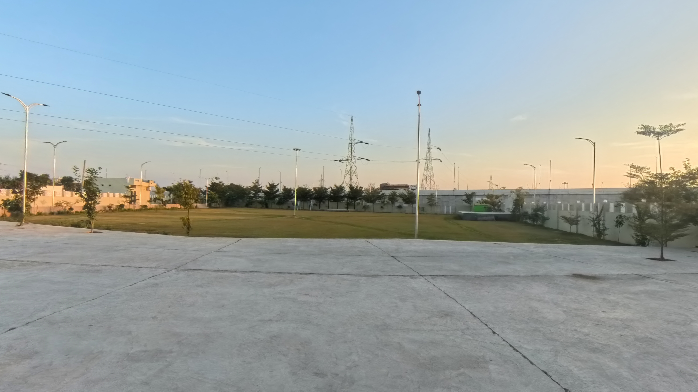

Rajasthan
Wedding Guide
← Didwana–Kuchaman
Wedding Venues
Wedding Venues in Didwana–Kuchaman
Explore available wedding venues and resort profiles in the Didwana–Kuchaman area.

FEATURED VENUE
Madan Mohan Resort
Wedding Venue • Didwana, Rajasthan
Capacity: 1000+ Guests
Wedding Venue
Resort
1000+ Guests
View Full Profile →